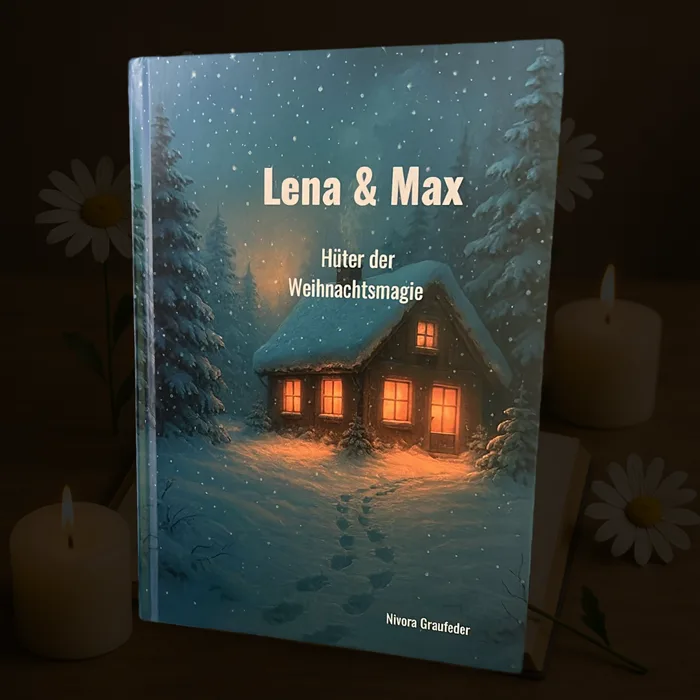

Bei Amazon ansehenEin winterliches Leseabenteuer für Groß & Klein
Lesestimmung: warmherzig, magisch, winterlich ✨
Themen: Familie, Freundschaft, Mut, Weihnachtszauber
Wenn draußen die Lichter funkeln und der erste Schnee fällt, wächst die Sehnsucht nach Geschichten, die das Herz wärmen. „Lena und Max: Hüter der Weihnachtsmagie“ nimmt dich mit in ein Dorf voller Geheimnisse, alte Legenden – und zwei Geschwister, die entdecken, dass in ihnen mehr steckt, als sie ahnen. Ganz ohne Kitsch, dafür mit viel Herz, Rätseln und einer Prise Wintermagie.
📖 Klappentext / Buchtext
Tauchen Sie ein in die zauberhafte Welt von „Lena und Max: Hüter der Weihnachtsmagie“, einem herzerwärmenden Weihnachtsabenteuer, das Leser aller Altersklassen verzaubern wird. In diesem bezaubernden Buch folgen wir den Geschwistern Lena und Max auf ihrer magischen Reise, um das Weihnachtsfest zu retten.
Inhalt:
Das ruhige Leben der Geschwister Lena und Max nimmt eine aufregende Wendung, als sie entdecken, dass sie Nachfahren einer langen Linie von Hütern der Weihnachtsmagie sind. Als das Dorf, in dem sie leben, von einer mysteriösen Dunkelheit bedroht wird, liegt es an Lena und Max, die Quelle dieser Magie zu finden und das Weihnachtsfest zu retten. Von ihren Großeltern lernen sie über alte Legenden und Geheimnisse, die tief in der Geschichte ihres Dorfes verwurzelt sind.
Jeder Tag bringt eine neue Herausforderung mit sich, von der Begegnung mit magischen Wesen im Wald bis hin zu spannenden Rätseln, die es zu lösen gilt. Die Geschwister müssen ihre neu entdeckten magischen Fähigkeiten einsetzen, um das Dorf vor dem drohenden Unheil zu bewahren. Dabei lernen sie wichtige Lektionen über Freundschaft, Familie und den wahren Geist der Weihnacht.
Dieses Buch ist eine Ode an die Magie der Weihnachtszeit, gefüllt mit Spannung, Abenteuer und herzerwärmenden Momenten. „Lena und Max: Hüter der Weihnachtsmagie“ ist perfekt für junge Leser und alle, die im Herzen jung geblieben sind.
🎁 Warum dieses Buch?
- Zeitlose Botschaft: Mut, Zusammenhalt und der echte Geist von Weihnachten.
- Abenteuer & Rätsel: Kurze, spannende Episoden – ideal zum Vorlesen oder Selbstlesen.
- Wohlfühl-Atmosphäre: Winterwald, Dorfsagen, Kerzenschein – eine Kulisse zum Eintauchen.
👧👦 Für wen eignet sich das Buch?
- Familien, die eine gemeinsame Advents-Lektüre suchen
- Junge Leser:innen (und alle Junggebliebenen), die Magie & Rätsel lieben
- Alle, die winterliche Geschichten ohne Grusel, aber mit Herz bevorzugen
🌟 Highlights (spoilerfrei)
- Geheime Pfade im Winterwald und Begegnungen mit magischen Wesen
- Familiengeheimnisse und alte Hüter-Legenden
- Rätsel, die nur mit Vertrauen & Zusammenhalt gelöst werden können
🕯️ Vorlesen & Advent
Tipp für die Adventszeit: Teile das Buch in kurze Tagesetappen ein (z. B. 10–15 Minuten), zünde eine Kerze an, bereite Kakao oder Tee zu – und macht daraus euer kleines Abendritual. So wächst die Vorfreude bis Heiligabend.
📘 Jetzt in die Weihnachtsmagie eintauchen
Hol dir „Lena und Max: Hüter der Weihnachtsmagie“ – und macht aus eurer Adventszeit ein warmes Lese-Ritual: jeden Abend ein Kapitel, Kerzenlicht, Kakao – und eine Geschichte, die Mut, Zusammenhalt und den echten Geist von Weihnachten lebendig werden lässt.
🚀 Jetzt loszaubernIch habe diese Geschichte geschrieben, weil die Vorweihnachtszeit oft hektisch ist – und wir gerade dann kleine Inseln der Ruhe brauchen. „Lena und Max: Hüter der Weihnachtsmagie“ schenkt euch Struktur für ein gemütliches Vorleseritual, Gelassenheit im Trubel und eine klare Botschaft: Mit Herz, Freundschaft und ein bisschen Magie wird selbst die dunkelste Nacht wieder hell. Ich wünsche euch funkelnde Lesestunden und ein wundervolles Fest! 🎄✨